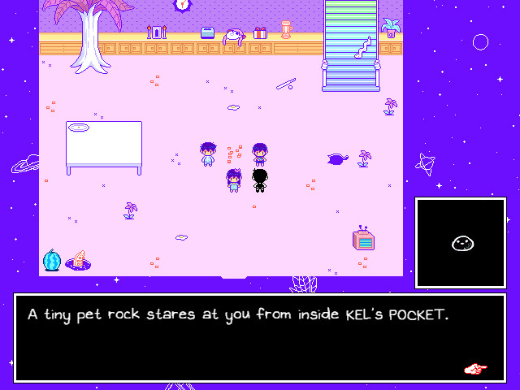
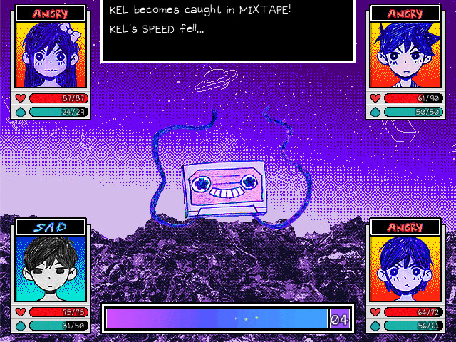
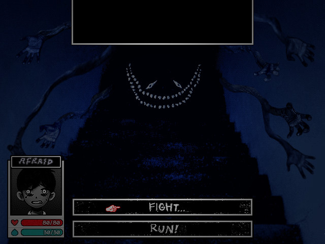
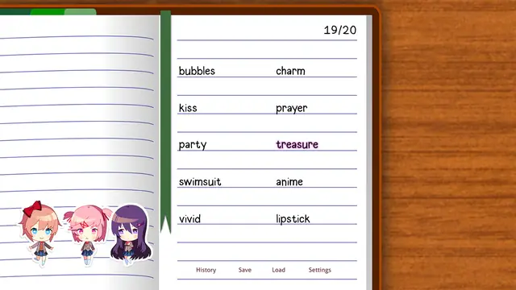
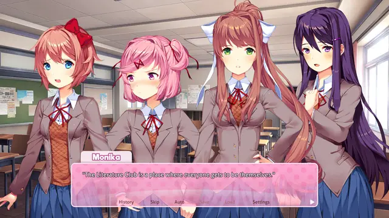
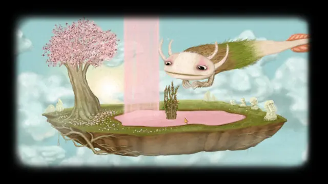
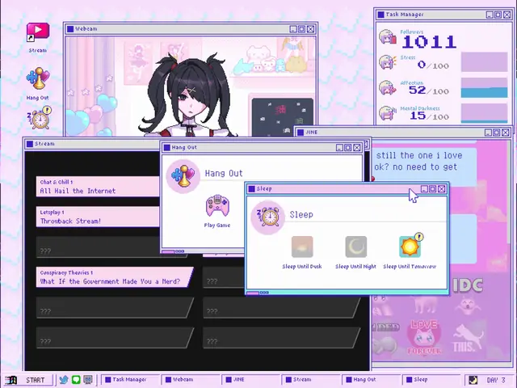
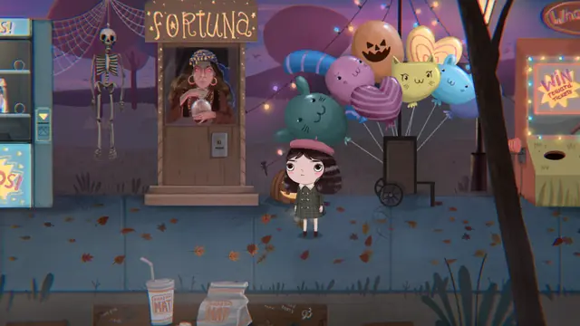
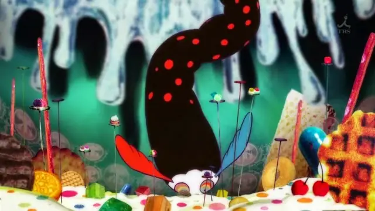
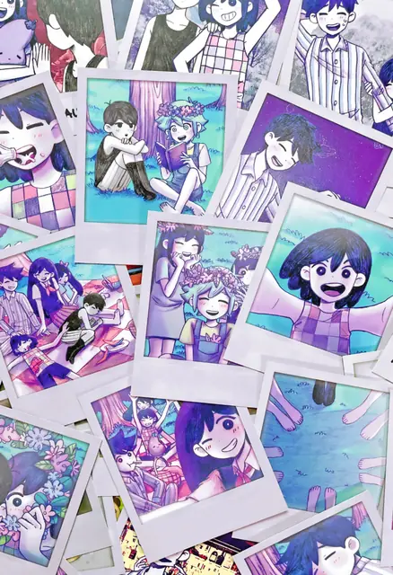

The feel
Pastel horror takes the softest look in games and lets it go wrong. Doki Doki Literature Club! dresses itself as a traditional dating sim, with pastel portraits of doe-eyed schoolgirls and gentle, playful music, and its soft-focus surface drains away slowly to show the horror behind it.1 In Japan's yami-kawaii fashion, too, the pastels stay while pills, syringes and bandages appear, and something more fragile sits just beneath the softness.2
It works because cute reads as harmless. Cute things seem unthreatening and get the brain ready to look after them,3 so players who arrive to mock a tropey anime game end up caring about its characters, and perhaps scared of them.4 The makers aim for unease more than shock. Dan Salvato puts the uncanny ahead of horror: the feeling that you don't belong, that you're not in control, or that your reality is distorted.5 In OMORI the fear is a sense of something being off that you can't quite define, not anything you can see.6
- sugary
- lonely
- clingy
- childlike
- too sweet
- off
Where it comes from
Kawaii culture makes room for the creepy, with words such as kimo-kawaii (creepy-cute), and yami-kawaii (sick-cute) fashion emerged in Harajuku in the 2010s.2 Puella Magi Madoka Magica (2011) worked within and against the magical girl genre, drawing its witches' labyrinths in a separate, collage-like style.7 Cute screens with frightening content were common in Japanese free and browser games,8 and kouri's free Ib (2012), made in RPG Maker 2000, takes place in an empty art gallery.9 OMOCAT raised $203,300 on Kickstarter in 2014 for OMORI,10 which came out in 2020.6 Dan Salvato released Doki Doki Literature Club free in 2017 after two years of work in secret,4,11 and nyalra, who wrote Needy Streamer Overload, counts it among the games he likes.8
Core elements
A harmless-looking opening
The opening has to look harmless. Madoka spends its first episodes setting up an expectation of safety and normalcy, so the fall lands harder,12 and DDLC hides behind a light-hearted facade of bright colours and cheerful music.11
Pastel colours throughout
The colours stay sweet as the subject darkens. Yami-kawaii keeps its soft pastels while pills, syringes, bandages and references to anxiety appear,2 and when OMORI's colours change, the warmth does not go away but becomes the disturbing part.6
Childlike character design
Characters are drawn the way a child sees people. Fran Bow's kids have big heads and big eyes, almost disfigured.13 OMORI's hand-drawn art gives its dream world a childlike feel, with simple, cute and very expressive characters,6 and Gekidan Inu Curry's twisted fairy tales unsettle without losing their childlike wonder.14
Subverted cute formats
The style borrows a cute form and breaks it from the inside. DDLC copies the dating sim, then glitches its own characters and places, until Monika steps in front of the text box and the game writes files into its own folder.11 Needy Streamer Overload plays out entirely on a fake computer desktop.8
Small wrong details
A single detail can give it away: the image of Sayori's death on a classroom poster,11 or pill capsules pinned to an all-pink outfit.2 The fear is a feeling of something being off that you can't quite define.6
Themes of trauma and mental illness
The subjects are human ones. DDLC moves from romance to obsession, depression, self-harm and suicide,11 OMORI explores trauma and escapism,6 and Fran Bow deals with death, mental health and abuse.15
How to do it
Choose a cute genre to imitate
Start from something with cute rules of its own, such as a dating sim, a magical girl show or a computer desktop. DDLC at first resembles a conventional dating sim,11 and Salvato wanted it to invite players not to take it seriously, then use that mindset against them.5 The Needy Streamer Overload team kept cutting anything that would not appear on a PC.8
Fix the palette early
Settle the colours before anything else. The Needy Streamer Overload team agreed from the start on unicorn colours, a mix of pastels such as purple, yellow-green and pink.8 Keep them when things go wrong: OMORI's warmth stays, and that is what makes it disturbing.6
Draw childlike characters
Base the shapes on how you saw people as a child. Fran Bow's creator drew kids with big heads and big eyes, and took the cold, almost fake colour of illustration books and films from the 1940s and 1950s.13 Draw by hand, and keep characters simple but expressive, as OMORI does.6
Draw the text box and menus
Make the menus part of the art. Draw the text box as one image the full width of the game, and keep the text to its central 60%, with a 20% border on either side.16 Draw frames and buttons as nine-part images, whose four corners stay the same size while only the sides and centre stretch.16
Pace the corruption
Let players live in the sweet version first. DDLC is split into four acts, and its turn comes after a few in-game days, a couple of hours of play.11 Then corrupt what they know: the first act's images, songs, text and characters come back broken, and dialogue turns unreadable as the characters split apart.11
Distort the cheerful music
Write cheerful themes with flute, piano, pizzicato strings and glockenspiel, and give each character a variation of one.17 For the turn, distort them: DDLC's Sayo-nara has a distorted intro and dissonant percussion, and "Just Monika." keeps a synth on D and D flat, a minor second, throughout.17 OMORI brings gentle tracks back in a new context, so comfort returns sounding like grief.6
Limit flashing and add warnings
Keep flashes to three a second or fewer over 25% of the screen, and no flashing sequence longer than 5 seconds.18 If an effect needs more, warn players and offer a setting named for what it changes, such as screen flash effects.18 DDLC Plus adds small optional warnings before sensitive scenes, which players can switch on or off in the settings.19
Cheat sheet
Do
- Make the sweet part worth loving. PC Gamer's reviewer was sad to see the charming set dressing burn up, because he liked writing poems for Yuri.1
- Plant the clues early. Replaying DDLC shows how well its bleakness was seeded.1
- Grow each nightmare out of a character. Most of the horror RPGs around Ib turn a protagonist's broken inner world into a nightmare version of the game's locations.20
- Warn players. DDLC shows a content warning the first time it starts, and Plus adds optional warnings before sensitive scenes.19
Avoid
- Starting sinister. Set up safety and normalcy first, so the fall lands harder.12
- Leaning on jump scares. DDLC is not full of jump scares or horrifying images,4 and Fran Bow's creator says her game is not entirely about jump scares, horrors and gore.13
- Illness as decoration. nyalra never saw yami-kawaii images of mental health or drug references as the essence of Needy Streamer Overload, and a girl with mental issues was not the story he wanted to tell.21
- Gimmicks that don't belong. For the Ib remake, kouri tried to fix gimmicks that didn't tie into the art.9
- Calling a setting epilepsy safe. No game can promise that, so name what the setting changes, such as screen flash effects.18
Tools and tutorials
- Ren'Py
The open-source visual novel engine behind the desktop version of Doki Doki Literature Club.22
- Ren'Py GUI Customization Guide
How the default text box, frames and buttons are built from images.16
- RPG Maker MZ
From the engine family behind OMORI10 and Ib, which was made in RPG Maker 2000.9
- Krita
A free paint program for drawing everything by hand.
- Coolors
Lock the colours you like and generate the rest, to build a pastel palette on purpose.
Palette
Sampled from OMORI, Doki Doki Literature Club Plus! and Fran Bow. Keep to the first six, and save the last two for the turn: RPG Maker horror drains its nightmares to black and white and a few dense colours.20
Feel the vibe
In motion
Listen
bo en is one of OMORI's three composers,6 and an OMORI version of My Time was already on the game's 2014 Kickstarter page.10
YouTubePiano and acoustic guitar, sung by Jillian Ashcraft, with lyrics that catch how bittersweet things end up with Monika.17
YouTubeNeedy Streamer Overload's theme. KOTOKO, who sang many 2000s anime songs, sings it, Aiobahn, who made all of the game's music, composed it, and nyalra wrote the words.23
YouTubebo en's own version. Play it next to the OMORI one and listen for what changes.
YouTubeFrom the show's score. Listen for how sweet and how solemn it manages to be at once.
YouTube
More references










Games
- Ib
kouri's free game, set in an empty art gallery,9 where your rose is your health bar.20 Study how the paintings turn on you.
- Fran Bow
A drug called Duotine lets Fran see another reality, where the monsters are.15 Study how the same places change.
- Doki Doki Literature Club!
Its glitches break the text box, the music and the game's own files.11 Study how each act breaks a little more.
- Little Misfortune
Killmonday's follow-up to Fran Bow, more of the studio's creepy/cute work.15 Compare the two.
- OMORI
A hand-drawn, childlike dream world whose colours change when things go wrong.6 Study both sides.
- Happy Game
In Amanita Design's usual style, it looks happy-go-lucky on the surface until the dream fills with strange monsters and everyday objects with horrifying faces.24 Study how the red light takes over.
- Needy Streamer Overload
The whole game is a fake PC desktop where you click icons to give commands.8 Study how much story fits in its windows.
Film, art and more
- Puella Magi Madoka Magica
Gekidan Inu Curry, who created the witches, work in paper animation, stop-motion and collage.14 One labyrinth leads through a pill-chandelier wonderland into a heart of sweets.12
- Coraline
A sweeter copy of home where everyone has buttons for eyes.
- Cry Baby
Melanie Martinez's dollhouse pop: nursery-rhyme melodies over dark stories.
- Menhera and yami kawaii
Japanese sick-cute: soft pastels with pills, syringes, bandages and tears.2
Sources
- 1Doki Doki Literature Club! hides a gruesome horror game under its cute surface
- 2“Painfully” Cute: The Emotional Life of Yami-Kawaii in Japan
- 3‘Like a tiny kitten waiting to pounce:’ Inside the cult of cute
- 4Doki Doki Literature Club's Horror Was Born From A Love-Hate Relationship With Anime
- 5Doki Doki Literature Club creator Dan Salvato on new Plus version, journey to Switch, more
- 6Omori Review
- 7Becoming the Labyrinth: Negotiating Magical Space and Identity in Puella Magi Madoka Magica
- 8「好きだったインターネットが急に敵に見える恐怖感」 新鋭にゃるらが「NEEDY GIRL OVERDOSE」で描いたもの ("The fear of the internet you loved suddenly looking like an enemy": what rising creator nyalra drew in NEEDY GIRL OVERDOSE)
- 9Ib developer interview: Why a remake after 10 years?
- 10OMORI
- 11Doki Doki Subversion Club! Gothic Ghosts, Uncanny Glitches, and Abject Boundaries
- 12Puella Magi Madoka Magica – Episode 3
- 13Interview: Natalia Figueroa - Killmonday Games
- 14Gekidan Inu Curry: Anime’s Fairy Tale Authors, A Collage Of Collages
- 15Fran Bow is a deeply unsettling horror game tied together with a pastel pink ribbon, and it's even better the second time around
- 16GUI Customization Guide
- 17Doki Doki Literature Club! Official Soundtrack
- 18Avoid flickering images and repetitive patterns
- 19Updates to Content Warnings in DDLC Plus
- 20The RPG Maker Horror Revolution That No One Noticed
- 21“I wanted my next game to be entirely my own.” NEEDY STREAMER OVERLOAD creator nyalra on starting his own game company and pursuing 90s eroge legacy
- 22Ren'Py Visual Novel Engine
- 23配信女子育成ADV「NEEDY GIRL OVERDOSE」の発売日が6月5日に決定。KOTOKOさんが歌う主題歌“INTERNET OVERDOSE”のMVが公開 (NEEDY GIRL OVERDOSE dated for 5 June, and the video for its KOTOKO-sung theme INTERNET OVERDOSE is out)
- 24Happy Game review: Nightmare fuel